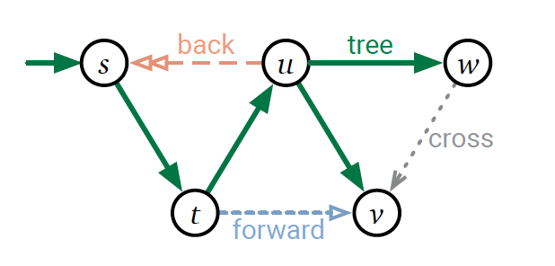

读书笔记之《Algorithms》6
~~ 更新于 -> 2020-11-10
Depth-First Search（深度优先搜索）
模板
def PreProcess(G):
clock = 0
def PreVisit(v):
clock += 1
v.pre = clock
def PostVisit(v):
clock += 1
v.post = clock
def DFS(v):
mark v
PreVisit(v)
for w in edge v->w:
if w is unmarked:
w.parent = v
DFS(w)
PostVisit(v)
def DFSAll(G):
PreProcess(G)
for v in G:
unmark v
for v in G:
if v is unmarked:
DFS(v)
顶点和边的分类
| 顶点状态分类 | 含义 |
|---|---|
| new | DFS(v) 未被调用时（即 clock < v.pre） |
| active | DFS(v) 被调用未结束时（即 v.pre <= clock < v.post） |
| finished | DFS(v) 调用结束时（即 v.post <= clock） |
边（u->v）的分类 | 含义 |
|---|---|
| tree edge | v is new 且 u.pre < v.pre < v.post < u.post 且 u = v.parent |
| forward edge | v is new 且 u.pre < v.pre < v.post < u.post 且 u != v.parent |
| back edge | v is active 且 v.pre < u.pre < u.post < v.post |
| cross edge | v is finished 且 v.post < u.post |

检测环路
名词定义
- dag：directedacyclic graph（有向无环图）
- source：dag 中入度为 0 的顶点
- sink：dag 中出度为 0 的顶点
每个 dag 中至少有一个 source 和 sink。
def IsAcyclicDFS(v):
v.status = Active
for w in range(v->w):
if w.status == Active:
return False
else if w.status == New:
if IsAcyclicDFS(w) == False:
return False
v.status = Finished
return True
def IsAcyclic(G):
for v in G:
v.status = New
for v in G:
if v.status == New and IsAcyclicDFS(v) == False:
return False
return True
拓扑排序
每个 dag 都有一个拓扑顺序，把其任一后续遍历反序排列就是一个拓扑顺序。
计算拓扑顺序的列表
def TopSortDFS(v, slot, S):
v.status = Active
for w in rangs(v->w):
if w.status == New:
slot = TopSortDFS(w, slot, S)
else if w.status == Active:
fail gracefully
v.status = Finished
S[slot] = v
slot -= 1
return slot
def TopologicalSort(G):
S = [None] * size(G)
for v in G:
v.status = New
slot = size(G) - 1
for v in G:
if v.status == New:
slot = TopSortDFS(v, slot, S)
return S
按照拓扑排序就地处理
- 逆序：同后序深度优先遍历
- 顺序：可以考虑先把 dag 完全反转，然后进行后序深度优先遍历
反转 dag 后，source 和 sink 调换，时间复杂度为 O(V+E)
书中的典型案例
（陆续完善……）
书中习题
（陆续完善……）
同一本书的文章集
- Preface-&-Introduction
- Recursion
- Backtracking
- Dynamic Programming
- Greedy Algorithms
- Basic Graph Algorithms
- 回到开头
⚠️ 请先安装一款邮件软件（部分浏览器可能不支持，请使用设备默认浏览器打开本页面）